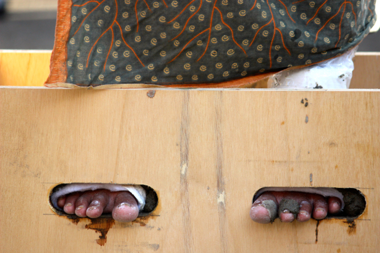

Analisis: Penggunaan Kembali Video 2 Hari #Dipasungsemen (CC BY) Oleh Navicula Pada Video Klip Lagu ‘Kartini’

Adhito Harinugroho (Dhito) adalah seorang pembuat video yang banyak melibatkan diri dengan tema-tema keadilan sosial, hak asasi manusia, dan isu-isu humanitarian.[1] Pada tanggal 16 April 2016 Sorge Magazine mengunggah video yang dibuat Dhito bersama Efi Sri Handayani, dengan judul ‘2 hari #Dipasungsemen’ di kanal Youtube Sorge Magazine.
Youtube memungkinkan penggunanya untuk menempelkan lisensi Creative Commons pada video yang mereka unggah. Lisensi yang dapat digunakan adalah lisensi CC BY. Lisensi ini memungkinkan penggunaan konten video tersebut tanpa meminta izin pihak pembuat video, dengan berketentuan:

- Anda diizinkan menggandakan dan menyebarluaskan video tersebut.
- Anda diizinkan mengubah, menggubah, dan membuat karya turunan dari video tersebut untuk tujuan apapun, termasuk tujuan komersial.
- Anda wajib mencantumkan nama pembuat video dengan lengkap, memberikan tautan pada sumber video, dan menunjukan perubahan yang dibuat dari video tersebut.
5 hari kemudian (21/4/2016), grup band Navicula menggunakan potongan dari video tersebut di dalam video klip salah satu lagunya yang berjudul ‘Kartini’. Navicula menyebutkan Sorge Magazine sebagai sumber potongan video yang dipakai. Dalam penerapan ketentuan atribusi lisensi CC BY yang digunakan oleh Sorge Magazine pada video ‘2 Hari #Dipasungsemen, Navicula tidak menyebutkan nama terang pembuat video tersebut (Adhito Harinugroho dan Efi Sri Handayani), dengan kata lain Navicula hanya menyatakan bahwa video tersebut berasal dari kanal youtube Sorge Magazine, tempat video tersebut dipublikasikan. Dengan kata lain, penerapan atribusi pada aktivitas penggunaan kembali video tersebut, kurang lengkap.
Perhatikan poin-poin berikut terkait penulisan atribusi yang kami anjurkan:
JPSL (Judul, Pencipta, Sumber, dan Lisensi)
- Judul - 2 Hari #Dipasungsemen
- Pencipta - Adhito Harinugroho dan Efi Sri Handayani
- Sumber - https://youtu.be/VUTnULTxipE
- Lisensi - CC BY 3.0
Pemakaian potongan video ini dapat menjadi studi kasus terkait penggunaan kembali ciptaan berlisensi CC BY sebagai bagian dari ciptaan-ciptaan lain. Bahwa, lisensi terbuka yang diterapkan oleh pencipta telah memudahkan pengguna untuk memanfaatkan konten untuk menyebarluaskan sebuah pesan kepada publik, misalnya pesan kemanusiaan yang coba disampaikan oleh kedua video tersebut. Namun, CC menyarankan penerapan Atribusi yang sesuai, atau lengkap dalam setiap penggunaan kembali ciptaan. Hal itu dapat diketahui dengan melihat ke 6 lisensi utama, yang tiap-tiap ketentuannya, selalu mengikutsertakan ketentuan Atribusi (BY).
Selain itu penerapan Atribusi juga ditekankan pada bagian Pembatasan Hak Cipta Undang-Undang Hak Cipta, di mana penggunaan ciptaan tanpa izin dianggap tidak melanggar hak cipta, asal sumber disebutkan. Bagian masa berlaku hak cipta juga menekankan, bahwa hak moral, atau hak seorang pencipta untuk disebutkan namanya pada setiap penggunaan ciptaannya, tidak mengenal batas waktu.
Silahkan buka tautan ini untuk informasi lebih lanjut mengenai penggunaan lisensi Creative Commons di Youtube.
[1] https://about.me/adhitoharinugroho
Tags:
Oleh: Hilman Fathoni
18 Aug 2016Kategori:
Berita Terbaru
- Lokakarya Hak Cipta dan Lisensi Creative Commons di Pekanbaru
- Pengumuman Resmi: Hasil Akhir Training of Trainers Creative Commons Indonesia
- Literatur tentang Model Bisnis Terbuka "Made With CC"
- Data dan Artikel Ilmiah Terbuka dari PLOS!
- Konten Format Model 3 Dimensi Berilsensi CC di Platform Sketchfab